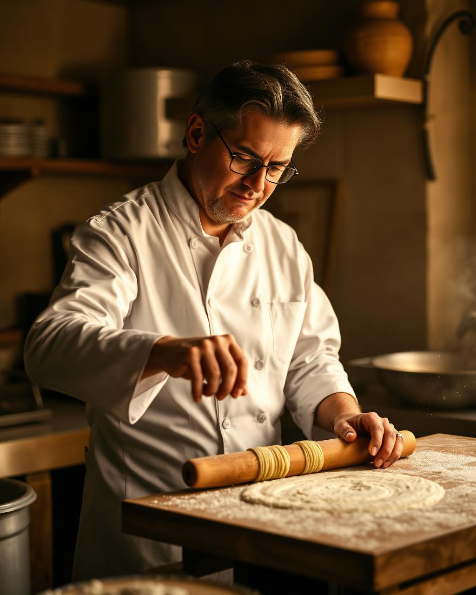

About Cucina Fresca
The Story of Cucina Fresca
Bringing Genuine Italian Trattoria Traditions to Mysuru
Founded with an uncompromising passion for genuine Italian culinary heritage, Cucina Fresca was created to offer Mysuru an authentic taste of traditional trattoria dining. From our kitchen in Saraswathipuram, every dish celebrates age-old recipes passed down through generations.
We believe that great Italian food relies on simplicity, quality ingredients, and time. We don't take shortcuts — our pizza dough ferments slowly for 72 hours, our pasta is rolled fresh every morning, and our sauces simmer for hours to achieve deep, rich flavor profiles.
100% Scratch Made
No pre-packaged sauces or frozen dough. Everything crafted fresh daily.
DOP Ingredients
Imported San Marzano tomatoes, Parmigiano-Reggiano & EVOO.

Our Philosophy
The Four Pillars of Our Kitchen
Why dining at Cucina Fresca feels like a culinary journey across Italy.
Handmade Pasta
Crafted daily using 100% durum wheat semolina and fresh egg yolks for authentic al dente texture.
72-Hour Dough
Naturally leavened slow dough baked at 450°C in our stone oven for a crisp, light crust.
DOP Imports
San Marzano DOP tomatoes, Ligurian EVOO, Parmigiano-Reggiano, and fresh basil.
QR Table Service
Sit anywhere, scan the QR code to order, track live kitchen prep, and settle your bill seamlessly.

Culinary Leadership
Meet Chef Marco Ferretti
“Italian cooking is not about complex sauces or extravagant garnishes. It is about honoring three or four flawless ingredients and letting patience bring out their soul.”
Trained in Bologna and Naples, Chef Marco brings over 15 years of authentic Italian cooking experience to Mysuru. He oversees every batch of pasta rolled, every pizza dough kneaded, and every sauce simmered at Cucina Fresca.
Experience Authentic Italian Dining
Visit us in Saraswathipuram, Mysuru or explore our full digital menu online right now.